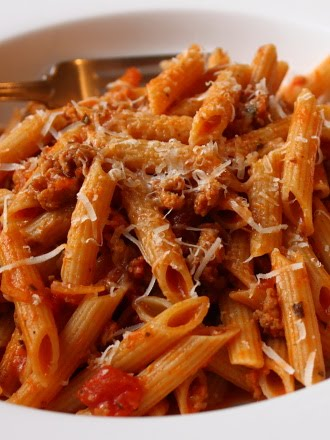

Spicy Sausage Ragu

Description
Feeling a bit short on time but in great need of a hearty meal?
Ingredients
- 1 pound spicy Italian sausage, casing removed
- 1 tablespoon fresh parsley, minced
- ½ cup dry white wine
- ¼ cup heavy cream
- 3½ cups tomato sauce
- 1 cup water
- 14½ ounces dry penne pasta
- 1 cup finely grated Parmigiano-Reggiano cheese
Steps
- Cook sausage in a Dutch oven over medium heat until browned, about 15 minutes.
- Stir in parsley and cook for about 2 minutes.
- Stir in white wine and cook until the wine has nearly evaporated, 3 to 5 minutes.
- Stir in heavy cream, increase heat to high and bring to a boil. Stir in marinara sauce and water and return to a boil. Reduce heat to low and simmer sauce for 1 hour.
- Fill a large pot with lightly salted water and bring to a boil. Stir in penne, and return to a boil. Cook pasta uncovered, stirring occasionally, until cooked through, but still firm to the bite, about 11 minutes; drain
- Combine pasta and sauce; remove from heat, cover and let sit for about 2 minutes.
- Serve pasta and sauce topped with grated Parmigiano-Reggiano.